Nunca escribes solo
Misi es un gato de píxeles que vive al pie de tu texto. Camina, come, juega con tus palabras y se duerme cuando tú te concentras. Si escribes mucho, llegan otros.
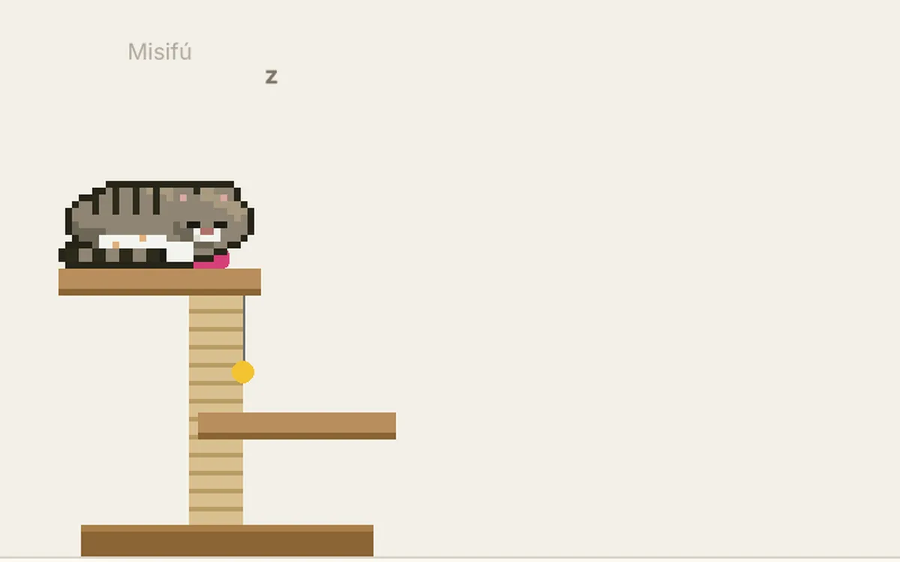
Cada día puede llegar alguien distinto
Misi cambia de apodo y de carácter. Tú eliges el tuyo en Configuración, o dejas que la app escoja cada vez.
Misifú
Gris atigrado y curioso. Camina, juega, duerme y te mira escribir.
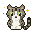
Misisipi
El mismo gato, pero con brillitos alrededor. Imposible regañarlo.
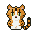
Misael
Naranja y veloz. Juega más con tus palabras que con su juguete.
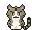
El Misil
Travesura al máximo: empuja palabras sin parar y casi no duerme.
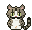
Sanchi
Lleva un bigote negro. No necesita nada más.
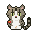
Tovarishch Mitsibiritsky
Insignia roja en el pecho. Firmeza ante la página en blanco.
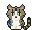
Messi
Viste azul y grana, y su juguete es un balón.
Bambino
No quiere croquetas: su plato trae una plantita de albahaca.
Misifuster
Morado de las orejas a la cola. Así llegó.
Juega con tu texto, sin borrar nada
En modo travieso, Misi se sienta sobre una palabra y la empuja fuera de la página. Es un juego: con deshacer, cada palabra vuelve a su lugar.
Si prefieres calma, las travesuras se apagan en Configuración.
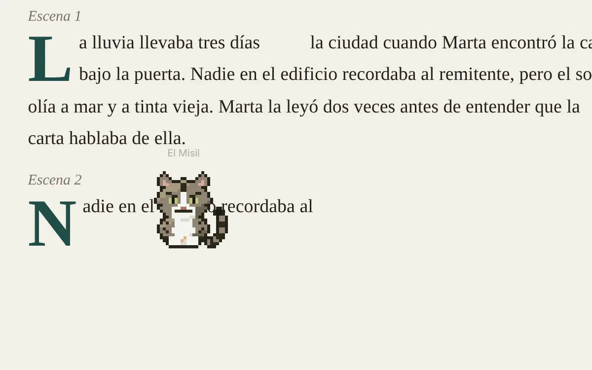
La cuenta se paga escribiendo
Cada día de escritura y cada palabra suman. Con ellos se desbloquea el menú, los accesorios y los pelajes. Nada se compra: todo se gana con el hábito.
Bambino siempre pide albahaca. Domingo, el chihuahua, prefiere pizza.
Diez prendas para el gato mejor vestido
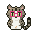
Lentes3 días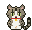
Collar con cascabel7 días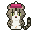
Gorro de lana10 días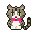
Moño14 días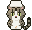
Gorro de chef20 días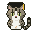
Birrete20,000 palabras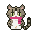
Bufanda30 días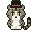
Sombrero de copa45 días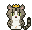
Corona60 días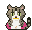
Capa de superhéroe90 díasDoce gatos en uno
Tres desde el inicio. Los demás llegan con los días, las palabras y las entradas de diario.
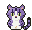
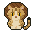
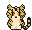
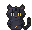
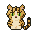
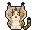
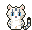
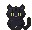
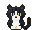
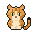
Lo que llega si sigues escribiendo
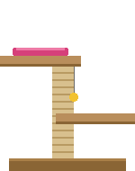

Domingo, en su sillón
El chihuahua de la casa también vive en la app. Llega con cien días y cien mil palabras. Ladra cuando una palabra se cae del texto, va por ella y luego se acomoda en su sillón.
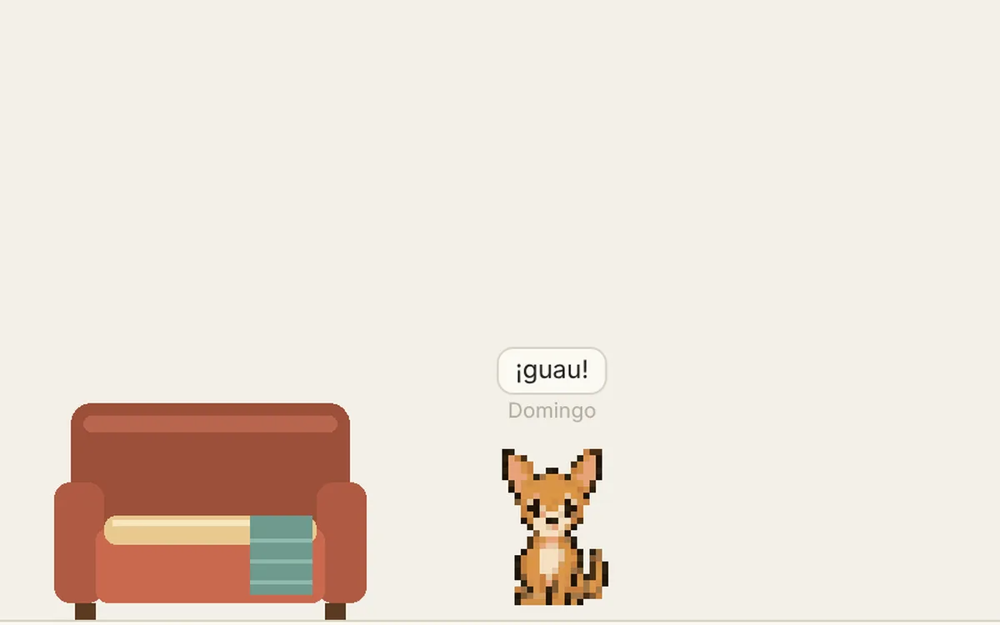
Tímido, al principio
Un gatito gris, chiquito, con un carro en lugar de torre. Se gana con 90 días y 80,000 palabras, y su confianza crece sesión a sesión.
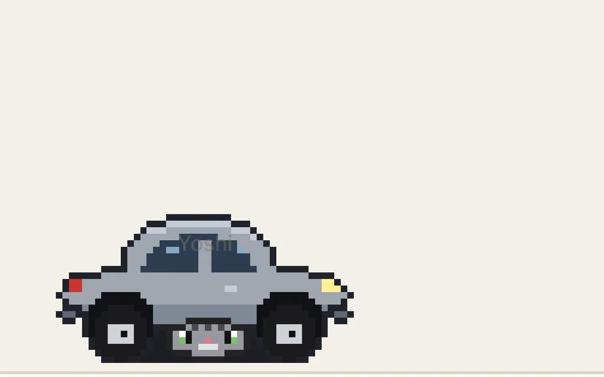
Su casa, a tu gusto
Misi tiene su propio menú de ajustes, con vista previa. Elige su apodo, su pelaje y sus accesorios, cambia el fondo de su sala según el estilo de la app o pon una imagen tuya.
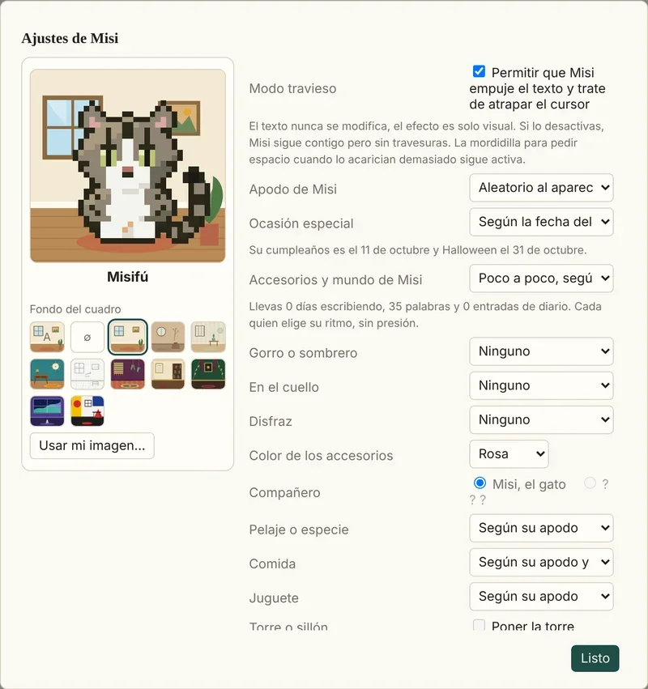
Hecho para que te trates mejor, no para que produzcas más
Si llevas mucho tiempo sin parar, Misi te sugiere un descanso, jugar un rato o salir a caminar. Tú eliges los minutos, y todo se apaga en Configuración.